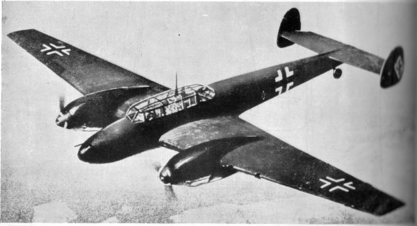
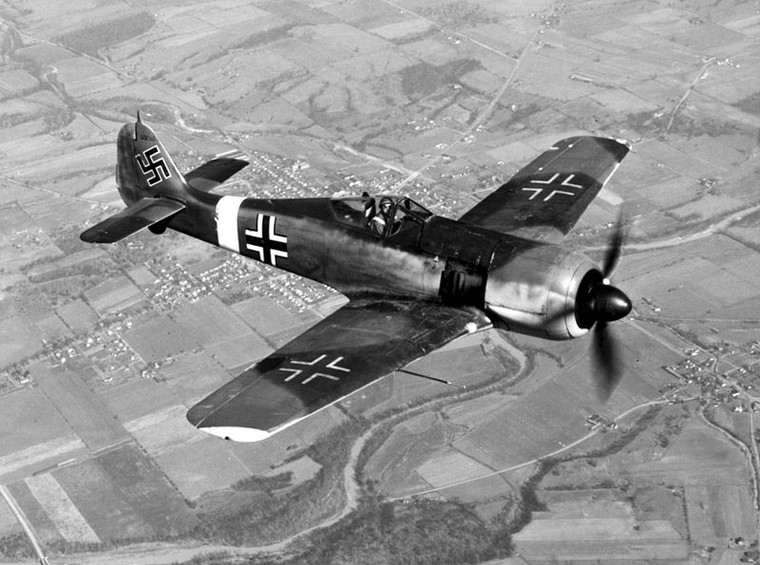

World War 2



El Messerschmitt Me 262, apodado Schwalbe (‘golondrina’ en alemán, en versiones de caza) y Sturmvogel (‘petrel’, en versiones de ataque), fue el primer avión de combate de reacción del mundo en entrar en servicio.4. Fue diseñado y construido en Alemania durante la Segunda Guerra Mundial y entró en servicio con la Luftwaffe en 1944 como avión de caza. Sin embargo, también fue utilizado para otras tareas incluyendo ataque a tierra, reconocimiento e incluso versiones de caza nocturno.
El Messerschmitt Bf 110 (a menudo llamado erróneamente Me 110)2 fue un caza pesado bimotor alemán (o Zerstörer, «destructor» en alemán) utilizado en la Segunda Guerra Mundial. Hermann Göring, comandante supremo de la Luftwaffe, fue un defensor del Bf 110 y apodó a las unidades de estos aviones como sus Eisenseiten (en alemán literalmente 'paredes', 'costados de hierro', 'hombres valientes').
El Focke-Wulf Fw 190, apodado Würger (‘alcaudón’ en alemán), fue un avión de caza alemán de la Segunda Guerra Mundial diseñado por Kurt Tank a finales de los años 1930. Este avión monoplaza propulsado por un motor radial fue el último caza de pistón alemán producido en masa que entró en acción durante la guerra. Reemplazó de forma parcial al exitoso Messerschmitt Bf 109 a partir de 1941. Desde que su producción comenzara en 1941 fue continuamente mejorado hasta el final de la guerra, durante ese tiempo fueron fabricados más de 20 000 aparatos. En 1945, el Fw 190 operaba de manera efectiva en todos los frentes.